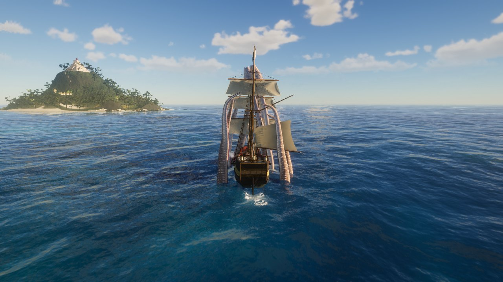

Nassau, the Pirate Republic · 1716
Take your brigantine and your crew out past the reef, where the old sea's monsters still hunt. Bring back their trophies, or feed the deep.
At the helm, W and S set and take in sail, A and D steer. She sails fastest with the wind on her quarter, behind and to one side.
At the helm, look out over either side to lay that broadside on a target, then click to fire. The crew reload the guns: the more hands, the faster.
On foot: 1 cutlass, 2 pistols, 3 musket, 4 blunderbuss, 5 grenadoes. R reloads, the right mouse button aims or parries.
The Kraken's arms can be cut off. Scylla's necks can be severed. Burn the Hydra's stumps with fire, or two heads grow back.
Sirens sing sailors over the side. The Oracle of Anthemoessa sells beeswax for your crew's ears.
If Umibōzu asks you for a barrel, give it one with no bottom. The merchants of Ryūgū-jima know where to get one.
Sell your trophies to the fence in Nassau. The gunsmith, the shipwright and the tavern have what you need to go after bigger game.
Press J for your journal of beasts and M for the sea chart. Mermaids and tavern gossip tell you where the great beasts lair.